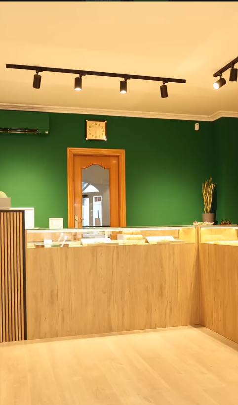
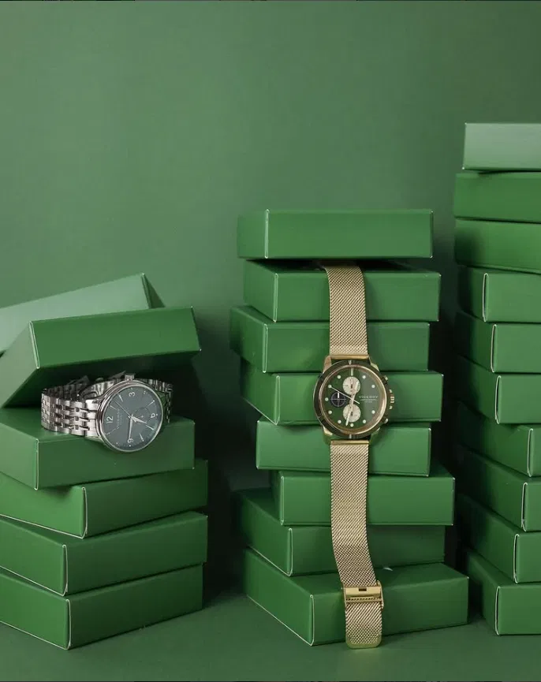

Quiénes somos
Somos Montoro, una relojería y joyería [de toda la vida / desde hace X años — añade aquí vuestra historia real]. Atendemos a cada cliente con calma, os ayudamos a elegir la pieza adecuada y cuidamos cada detalle, desde la venta hasta el mantenimiento.
Venta de relojes y joyería [oro, plata, piedras — ajusta según vuestro surtido real], reparación y mantenimiento básico, ajuste de correas y tallas.
Te asesoramos sin prisa para encontrar la pieza que buscas, tanto para regalar como para ti.


Parte de nuestra selección¿Tienes alguna pregunta o quieres reservar una pieza? Escríbenos o síguenos en Instagram.